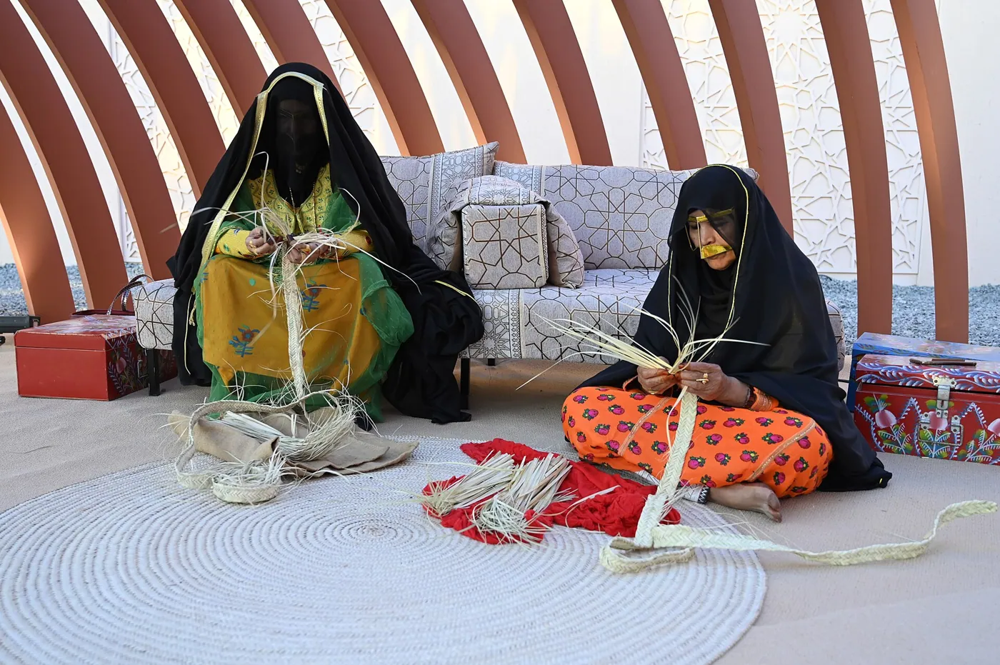
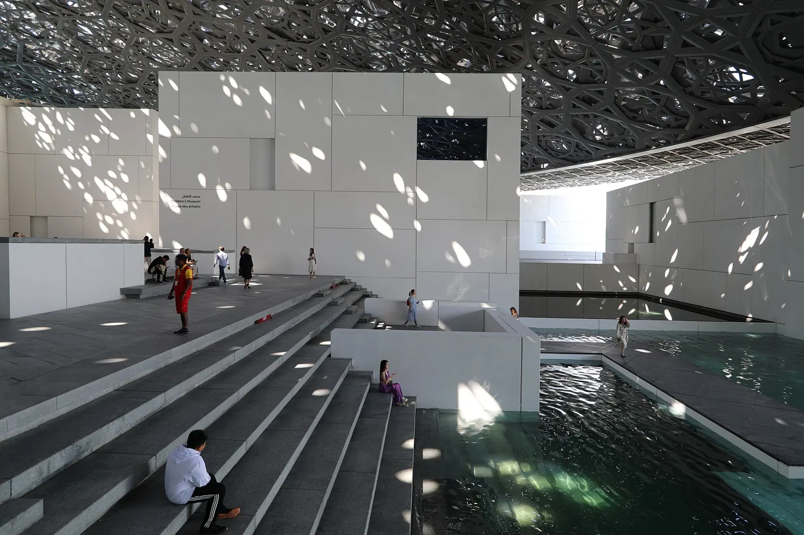
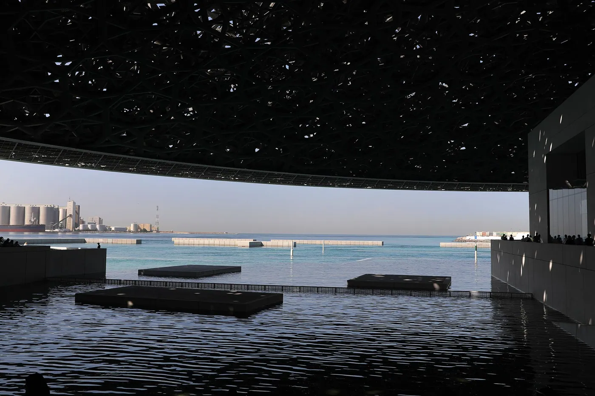
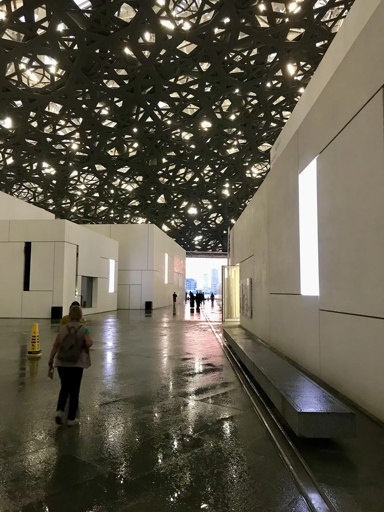
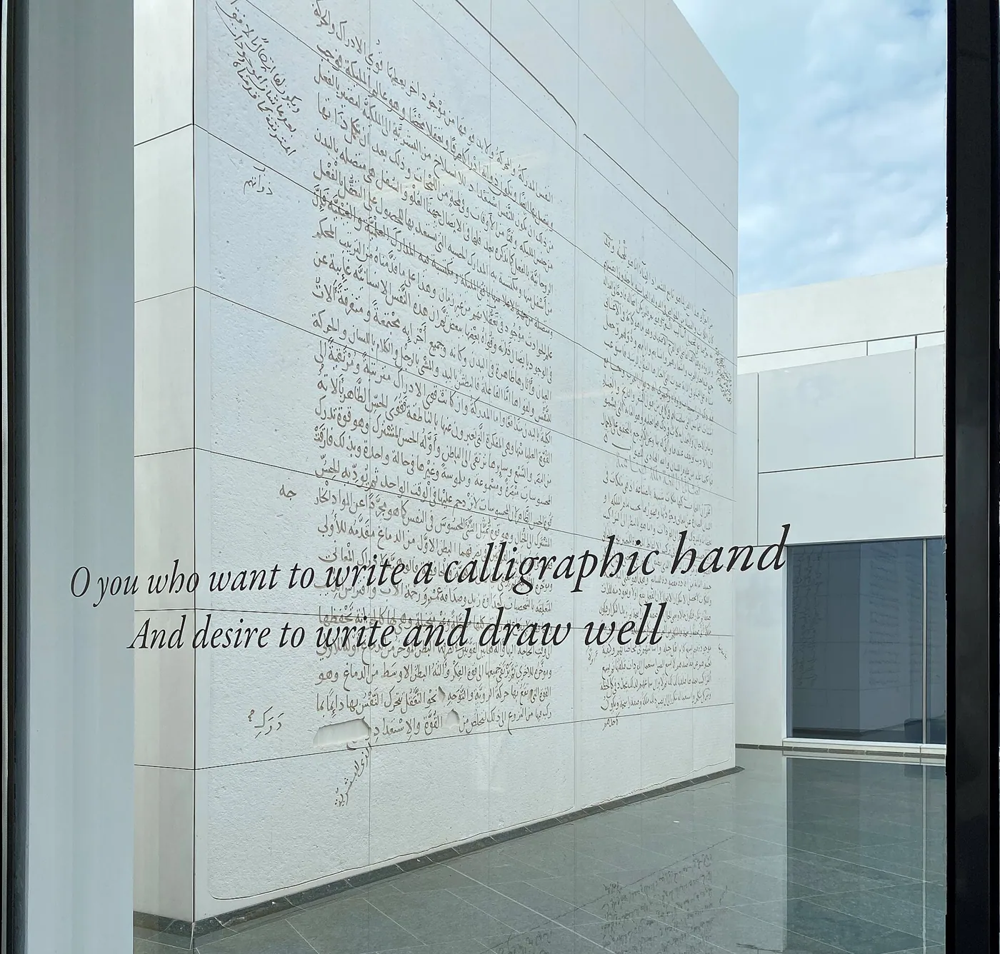
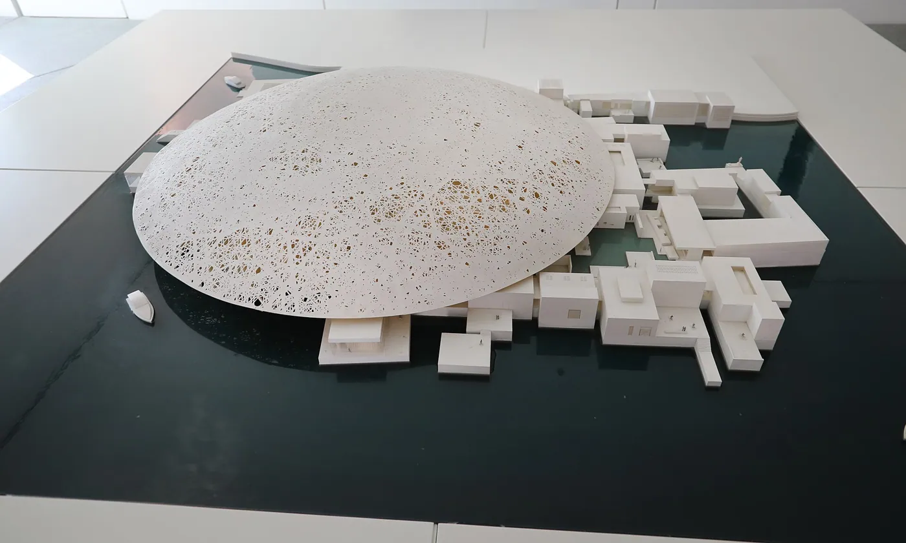

1/8 · ExteriorPhoto: Francesco Bini · CC BY-SA 4.0 · source

2/8 · Exterior · View under dome of Louvre Abu DhabiPhoto: Boubloub · CC BY-SA 4.0 · source

3/8 · InteriorPhoto: Francesco Bini · CC BY-SA 4.0 · source

4/8 · InteriorPhoto: Francesco Bini · CC BY-SA 4.0 · source5/8 · Interior · Inside of Louvre Abu Dhabi, with art by Giuseppe PenonePhoto: Boubloub · CC BY-SA 4.0 · source

6/8 · Interior · bezoekers in het Louvre Abu DhabiPhoto: Saschaporsche · CC BY-SA 4.0 · source

7/8 · Detail · Calligraphy at the Louvre Abu Dhabi, viewed from inside the museumPhoto: Boubloub · CC BY-SA 4.0 · source

8/8 · DrawingPhoto: Francesco Bini · CC BY-SA 4.0 · source